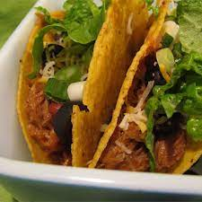

Cowboy Tacos

Description
It doesn't take very long to whip up a fun meal with this recipe for cowboy tacos. Cowboys love these meaty tacos with chili beans and olives.
Ingredients
- 1 lbs cubed or minced pork stew meat
- 1 (1.25 oz) package of taco seasoning mix
- 1 tbsp vegetable oil
- 1 cup chunky salsa
- 1 (16 oz) can chili beans, undrained
- 1/3 cup apricot preserves
- 12 taco shells
- 1 (10 oz) can sliced ripe olives, for topping
Directions
- Toss pork meat with taco seasoning mix in a plastic resealable bag until coated.
- Heat oil in a skillet over medium-high heat. Fry seasoned pork in hot oil, stirring occasionally, until pork is no longer pink.
- Stir salsa, beans, and apricot preserves into the skillet with pork. Reduce heat to low; simmer until heated through, about 10 minutes.
- Spoon 1/3 cup pork mixture into each taco shell and top with sliced olives.